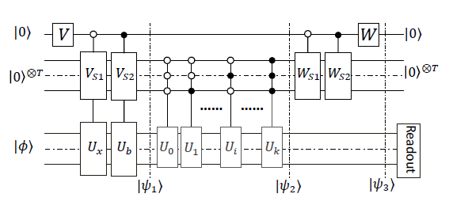
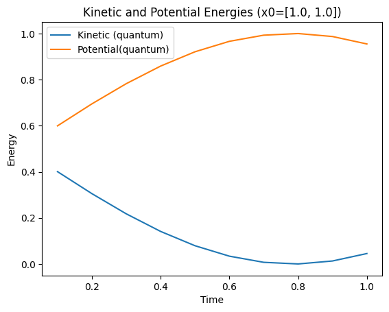
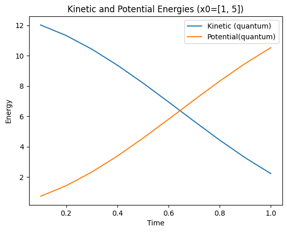

$\newcommand{\bra}[1]{\langle #1|}$ $\newcommand{\ket}[1]{|#1\rangle}$
Submitted by: Yevgeny Menaker, team: Quantotto
The work is tracked in the following GitHub repository: https://github.com/quantotto/Q-SITE-Classiq-Open-Challenge
In this challenge, we will be solving a differential equation using Quantum Computing algorithm and implementing on the Classiq platform. The work focuses on the scientific paper titled "A Quantum Algorithm for Solving Linear Differential Equations: Theory and Experiment", presented by Tao Xin, et al. in 2020.
We are given the following second order differential equation representic a harmonic oscillator:
$y'' + {\omega}y = 0$, $y(0) = 1$, $y'(0) = 1$
We should solve it using the Quantum Algorithm from the above mentioned paper for the case of ${\omega}=1$ and use the solution to evaluate the kinetic and potential energies in the time interval of $(0, 1)$. We will also study how the energies vary when we use different boundary conditions for $y(0), y'(0)$. Finally, we will leverage the Classiq platform to optimize our quantum circuits for width and depth.
This work is organized in four parts. Part I shows analytical solution for the above equation. Having precise solution will serve as reference for our quantum algorithm and will allow estimating the accuracy of the produced results. In Part II, we will formulate the problem as LDE (Linear Differential Equation) and present a simplified version of quantum algorithm solving the equation. Part III is the heart of this work, where we are solving the LDE using the Taylor series expansion. We create a Quantum model on Classiq platform implementing the approach from the scientific paper. We analyze the accuracy of the algorithm compared to the analytical solution for different orders of approximation. Then, we calculate the energies for various boundary conditions. Part IV concludes this work with optimization of Quantum Circuit for depth and width with help of Classiq tool.
Given the conditon of ${\omega}=1$ we are solving the following second order LDE:
$y'' + y = 0$
There are multiple ways to obtain the closed solution for $y(t)$. Let's use the method of characteristic polynom. For this equation we are obtaining the following quadratic polynomial:
$r^2 + 1 = 0$
It is easy to see that the solutions of this equation are two complex numbers: $r={\pm}i$. For the case of two complex roots of characteristic polynom, the general solution of the differntial equation is linear combination of trigonometric functions:
$y(t) = {C_1 \cdot cos(t)} + {C_2 \cdot sin(t)}$
Solving for $C_1$ and $C_2$ with boundary conditions of $y(0) = 1$, $y'(0) = 1$, we obtain:
$y(t) = cos(t) + sin(t)$
For more general case of boundary conditions $y(0) = a, y'(0) = b$ the solution takes the following form:
$y(t) = a \cdot cos(t) + b \cdot sin(t)$
For calculation of energy of harmonic oscillation we will need the $k$ and $m$ values for spring coefficient and mass respectively. Since $\omega=1$ we can conclude that $k=m=1$ because omega is given by $\omega=\sqrt{\frac {k}{m}}=1$ which trivially leads to $k=m=1$.
The formulas for energy calculation that we will use in the next parts are:
Potential energy: $U = \frac{k \cdot x^2}{2} = \frac{x^2}{2} = \frac{{y(t)}^2}{2}$
Kinetic energy: $K = \frac{m \cdot v^2}{2} = \frac{v^2}{2} = \frac{{y'(t)}^2}{2}$
where $v$ is the velocity and it is given by first derivative of y(t).
In order to solve a differential equation on Quantum Computer, we need to formulate it in the language it naturally understands. Hence, we have to switch to Linear Algebra. LDEs can be formulated as a system of linear equations:
$\frac{d}{dt}y = M \cdot y + b$
Where $y$ is N-dimensional vector, $M$ is $N \times N$ matrix. N is order of differential equation. Hence, $N=2$ in our case.
After re-writing the LDE as $y'' = -y$, our second order differential equation can be represented in matrix form and using the vectors with up to first degree derivatives:
$\frac{d}{dt}\begin{pmatrix} y \ y' \end{pmatrix} = \begin{pmatrix} 0 & 1\ -1 & 0 \end{pmatrix}\cdot \begin{pmatrix} y \ y' \end{pmatrix}$
NOTE: Since we don't have any constant terms in the original equation, $b=0$. We will use this fact, when simplifying the quantum circuit.
A well known fact that is used in the scientific paper is that the solution of this differential equation can be obtained through matrix exponentiation:
$y = e^{M \cdot t}$
After careful examination of our $M = \begin{pmatrix} 0 & 1\ -1 & 0 \end{pmatrix}$, we notice that it is actually Pauli-Y up to $-i$ factor. So, the solution take the following form:
$y = e^{-iY \cdot t}$
Pauli exponentiation can be effectively realized on Quantum Computer with single qubit gate. Effectively, we can leverage the RY operation. To remind, RY is dependent on the angle $\theta$ and represented by the $2 \times 2$ matrix:
$RY(\theta) = \begin{pmatrix} cos(\frac{\theta}{2}) & -sin(\frac{\theta}{2})\ -sin(\frac{\theta}{2}) & cos(\frac{\theta}{2}) \end{pmatrix}$
From this:
$e^{-iY \cdot t} = RY(2t) = \begin{pmatrix} cos(t) & -sin(t)\ -sin(t) & cos(t) \end{pmatrix}$
So, if we evolve the $\ket {y_0}$ vector representing the boundary conditions, we should obtain the solution.
$\ket {y_0} = \frac{1}{\sqrt 2} \begin{pmatrix} 1 \ 1 \end{pmatrix}$
Note that we applied the normalization condition of $\frac{1}{\sqrt 2}$ for $\ket {y_0}$.
We can easily implement this calculate to obtain the desired solution up to normalization factor (norm of $\ket {y_0}$).
$RY(2t)\ket {y_0} = \frac{1}{\sqrt 2}\begin{pmatrix} cos(t) & -sin(t)\ -sin(t) & cos(t) \end{pmatrix}\begin{pmatrix} 1 \ 1 \end{pmatrix} = \frac{1}{\sqrt 2}\begin{pmatrix} cos(t)-sin(t)\ sin(t)+cos(t) \end{pmatrix}$
Multiplying by the norm of $\ket {y_0}$ ($\sqrt 2$), we retrieve the solution that we derived in Part I.
Realizing this a Quantum Model is farly easy on Classiq platform:
from classiq import *
import numpy as np
t = 2 * np.pi / 3
@qfunc
def main(phi: Output[QBit]):
allocate(1, phi)
H(phi)
RY(2*t, phi)
We can then create, synthesize and test the model using State Vector simulator. It shows that the results of quantum simulation agree with the analytical solution.
from classiq.execution import (
ClassiqBackendPreferences,
ClassiqSimulatorBackendNames,
ExecutionPreferences,
)
backend_preferences = ClassiqBackendPreferences(
backend_name=ClassiqSimulatorBackendNames.SIMULATOR_STATEVECTOR
)
quantum_model = create_model(main,
execution_preferences=ExecutionPreferences(
num_shots=1024, backend_preferences=backend_preferences
)
)
quantum_program = synthesize(quantum_model)
res = execute(quantum_program)
analytical = np.cos(t) + np.sin(t)
amps = np.array([ps.amplitude for ps in res.result()[0].value.parsed_state_vector]) * np.linalg.norm([1.0, 1.0])
print(f"Analytical={analytical}; Quantum amps={amps}")
print(complex(res.result()[0].value.state_vector["1"]) * np.linalg.norm([1.0, 1.0]))
Analytical=0.36602540378443893; Quantum amps=[-1.3660254+0.j 0.3660254+0.j]
(0.36602540378443965+0j)
With this preliminary background out of the way, we are now going to apply the approach from the scientific paper to solve this differential equation. We will use the Matrix form developed in this part.
The paper suggests solving the differential equation using the Taylor series expansion up to the desired order of approximation. Higher orders require more qubits. According to the algorithm, we have the following qubits allocations:
Our goal is to implement the quantum circuit presented in the paper. See Figure below taken from the paper.

All qubits start in the $\ket 0$ state.
We will now derive all the operators required for solving our differential equation. We will see that, in a way, the suggested algorithm is implementing Linear Combination of Unitaries, where we use Taylor expansion coefficients and the unitaries are powers of matrix A (that is derived from matrix M - see previous section for the matrix form of differential equation)
V on ancilla puts it into superposition and is used as control qubit to encode $y_0$ and $b$. Since $b$ is zero in our case, we actually only need to encode $y_0$. V ends up being Z operator, which effective leaves the $\ket 0$ state intact on ancilla. We do still include it in the implementation for completeness.
Vs1 on the approximator qubits encode Taylor coefficients that control the operations on the $y_0$ part of of superposition. The number of coefficients depend on the order of approximation.
We can skip the definition of Vs2 because it is only needed in case of non-zero b.
The $U_m$ operator is simply $A^m$ where A is unitary derived from M in the matrix form of differential equation.
Classiq allows us to simplify the implementation using the following powerful statements:
control to implement multi-qubit control operations (e.g. we need them to apply operators $U_m$)within_apply to implement $V^\dagger U V$ (in this case, we need to apply the inverse of Vs1 after the series of controlled $U_m$ operations)repeat to loop through multiple $U_m$ operatorspower to implement $U_m = A^m$Below is our model implementation. There are some helper functions used. In order not to clutter the code of the model, the helper functions are moved to Appendix A.
The algorithm has three main parts:
After that, we post-select the work qubits values for the sub-space of ancilla and approximator qubits in 0 states.
We split the work into three functions:
encode applies initial operator V on ancilla and calls prep_qubits controlling on value 0 of the ancillaprep_qubits applies Vs1 unitaryapproximate prepares the phi qubit in y_0 (in the code it is x_0) state and repetedly applies the $U_m$ operators@qfunc
def prep_qubits(Vs1: CArray[CArray[CReal]], approximator: QArray, phi: QBit):
unitary(Vs1, approximator)
@qfunc
def encode(V: CArray[CReal], Vs1: CArray[CArray[CReal]], ancilla: QBit, approximator: QArray, phi: QBit):
unitary(V, ancilla)
control(ctrl=ancilla==0, stmt_block=lambda: prep_qubits(Vs1, approximator, phi))
@qfunc
def approximate(A: CArray[CArray[CReal]], normalized_x0: CArray[CReal], approximator: QNum, phi: QBit):
inplace_prepare_amplitudes(normalized_x0, bound=0.01, target=phi)
repeat(2 ** approximator.size, lambda i: control(approximator==i, lambda: power(i, lambda: unitary(A, phi))))
The work is controlled from the main function of the model, which uses the within_apply to drive the entire implementation.
# inputs for y'' + y = 0
x0 = [1.0, 1.0] # Boundary conditions
A = [[0, 1], [-1, 0]] # Linear equations (unitary)
k = 7 # order of approximation
t = np.pi / 3
total_qubits = int(np.log2(k+1)) + 2
Cs = calculate_Cs(t, k)
V = calculate_V()
Vs1 = calculate_Vs1(Cs)
normalized_x0 = normalize(x0)
@qfunc
def main(
phi: Output[QBit],
approximator: Output[QNum],
ancilla: Output[QBit]
):
allocate(1, phi)
allocate(int(np.log2(k+1)), approximator)
allocate(1, ancilla)
within_apply(
within=lambda: encode(V, Vs1, ancilla, approximator, phi),
apply=lambda: approximate(A, normalized_x0, approximator, phi)
)
In order to obtain the solutions for different values of $t$, we vary the parameters in the loop. The following function calculate_energies represents a single execution of the model with parameter $t$. It runs the model, extracts the results from the relevant amplitudes and calculates the Kinetic and Potential energies using the formulas that we presented in Part I.
Potential energy: $U = \frac{k \cdot x^2}{2} = \frac{x^2}{2} = \frac{{y(t)}^2}{2}$
Kinetic energy: $K = \frac{m \cdot v^2}{2} = \frac{v^2}{2} = \frac{{y'(t)}^2}{2}$
def state_vector_keys(qubits: int) -> tuple[str, str]:
return "0" * qubits, "0" * (qubits-1) + "1"
backend_preferences = ClassiqBackendPreferences(
backend_name=ClassiqSimulatorBackendNames.SIMULATOR_STATEVECTOR
)
def calculate_energies(t) -> tuple[float, float, float]:
# Calculate kinetic and potential energy at time t
# We return a tuple of kinetic, potential (calculated by quantum algorithm)
# and analytical solution for x (for reference)
# Returns: tuple[kinetic, potential, x_analytical]
# Calculate model parameters
global Cs, V, Vs1, normalized_x0
Cs = calculate_Cs(t, k)
V = calculate_V()
Vs1 = calculate_Vs1(Cs)
normalized_x0 = normalize(x0)
# Create, synthesize and execute the model
quantum_model = create_model(main,
execution_preferences=ExecutionPreferences(
num_shots=1024, backend_preferences=backend_preferences
)
)
quantum_program = synthesize(quantum_model)
res = execute(quantum_program)
# post-select results with ancilla and approximator qubits equal to 0
amps = [
ps.amplitude for ps in res.result()[0].value.parsed_state_vector
if ps["approximator"] == 0 and ps["ancilla"] == 0
]
# Re-scale amplitudes
total_prob = (amps[0] * amps[0].conjugate() + amps[1] * amps[1].conjugate())
# Extract position and velocity (position is the y(t) and velocity y'(t))
# Position is amplitude of phi=0 and velocity is amplitude of phi=1
X_key, V_key = state_vector_keys(total_qubits)
X_amp = complex(res.result()[0].value.state_vector[X_key]) / np.sqrt(total_prob)
V_amp = complex(res.result()[0].value.state_vector[V_key]) / np.sqrt(total_prob)
# Calculate real values and rescale the values by norm of x0
Xt = np.sqrt((X_amp * X_amp.conjugate()).real) * norm(x0)
Vt = np.sqrt((V_amp * V_amp.conjugate()).real) * norm(x0)
return (Vt ** 2) / 2, (Xt ** 2) / 2, (analytical_solution(x0, t) ** 2) / 2
Here we run it in a loop for the (0, 1) interval.
t_axis = np.linspace(0.1, 1.0, 10)
ks, ps, pas = [], [], []
for t in t_axis:
kinetic, potential, potential_analytical = calculate_energies(t)
ks.append(kinetic)
ps.append(potential)
pas.append(potential_analytical)
Executing the code for different values of boundary conditions ($y_0$) produced the results that agree with the classical (analytical) solution. See figures below for Kinetic and Potential energies for two choices of $y_0$: (1.0, 1.0) and (1.0, 5.0)
 
Note that the paper had a few discrepancies that were discovered during the implementation phase. The implemented algorithm pretty closely resembles the one outlined in the paper, but there were a few modifications, such as adjusting the scaling factor.
Following the work of creating and executing the quantum circuit, we will now work on analyzing its depth and width and see if there any ways to optimize them. It is important to note that while building the model in the previous part, we have already made a few optimizations based on the actual equation we are solving. Now, we will use Classiq platform tools to take the optimization to the next level.
Generic linear algebra helpers.
def analytical_solution(boundary_condition, x):
return boundary_condition[0] * np.cos(x) + boundary_condition[1] * np.sin(x)
def norm(a):
return np.linalg.norm(a)
def normalize(a):
return list(np.array(a) / norm(a))
def sqrt_sum(a):
return np.sqrt(np.sum(np.array(a)))
def create_unitary(first_column):
# Create unitary given first column
#
k = len(first_column)
added_rows = []
for i in range(k-1):
row = [0] * k
row[i] = 1
added_rows.append(row)
A = np.array([
normalize(first_column),
*added_rows
]).T
n = A.shape[1]
# Use Gram-Schmidt orthogonalization
# Credits: https://www.mycompiler.io/view/Di9dsPfR4gy
for i in range(1, n):
for j in range(i):
A[:, i] = A[:, i] - np.dot(A[:, j], A[:, i]) * A[:, j]
A[:, i] = A[:, i] / np.linalg.norm(A[:, i])
return A.tolist()
Helper function to calculate Taylor expansion coefficients and relevant unitaries for operators.
def calculate_Cs(t, k):
arr = [((t) ** i) / math.factorial(i) for i in range(k+1)]
return arr
def calculate_V():
# In our case it is just Z operator
return [[1, 0], [0, -1]]
def calculate_Vs1(Cs):
first_col = normalize(np.sqrt(np.array(Cs)).tolist())
return create_unitary(first_col)